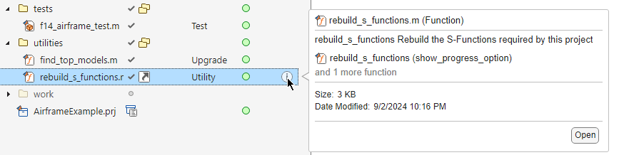
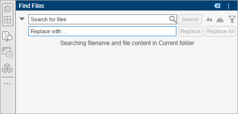
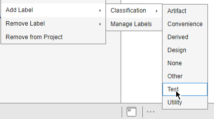

Manage Project Files
This table shows how to add, move, rename, and open project files and folders. Some of these actions can also trigger a dependency analysis to check for effects on other project files. If you have not yet opened a project, see Open Project. You must use the Project panel to interact with project files.
Tip
To revert changes to files easily, put your project under source control. For more information, see Create Local Git Repository in MATLAB.
| Action | Procedure |
|---|---|
| Create a new project folder. | In the Project panel, right-click in the white space, and then click New > Folder. |
| Add files to a project. | In the Project panel, right-click the file you want to add to the project and select Add to Project. You also can paste or drag files and folders from your operating system file browser or the Files panel to the Project panel. MATLAB® adds the file to the project. To add a
file programmatically, use the |
| Remove project files or folders. | In the Project panel, right-click the file, and select Remove from Project. To
remove a file programmatically, use the |
Move project files or folders. In R2025a: You can move files and folders between projects in the same project hierarchy. | Cut and paste or drag the files in the project. |
| Rename project files or folders. | In the Project panel, right-click the file, and select Rename. |
| Open project files. | In the Project panel, right-click the file, and select Open. You also can double-click the file. |
| Preview project file contents without opening the file. | In the Project panel, select the file. Then, click the information icon that appears.  |
| Delete a project file or folder. | In the Project panel, right-click the file, and select Delete. |
| Run a file at project startup or shutdown. | In the Project panel, right-click the file, and select Run at Startup or Run at Shutdown. Alternatively, use the Task Automation section in the Project Settings dialog box. For more information, see Automate Startup and Shutdown Tasks. |
| Remove a file from the startup or shutdown files list. | In the Project panel, right-click the file, and select Remove from Startup or Remove from Shutdown. Alternatively, use the Task Automation section in the Project Settings dialog box. For more information, see Automate Startup and Shutdown Tasks. |
| Add a folder to the project path. | In the Project panel, right-click the folder, and select Add to Project Path > Selected Folders. To add the folder and all subfolders to the project path, select Selected Folders and Subfolders instead. Alternatively, use the Search Path section in the Project Settings dialog box. For more information, see Specify Project Path. |
| Remove a folder and subfolders from the project path. | In the Project panel, right-click the folder, and select Remove from Project Path. Alternatively, use the Search Path section in the Project Settings dialog box. For more information, see Specify Project Path. |
| Create a project shortcut from project files. | In the Project panel, right-click the file, and select Create Shortcut. For more information about managing and running shortcuts, see Create Shortcuts to Frequent Tasks. |
| Filter files | The Project panel shows all the files inside the project root folder.
|
Automatic Updates When Renaming, Deleting, or Removing Files
When you rename, delete, or remove files or folders in a project, the project runs a dependency analysis to check for effects on other project files. When the analysis is complete, the project displays the affected files. Starting in R2025a, the project looks for references to the modified file in all projects in the project hierarchy. If you have not yet run a dependency analysis on the project, the analysis may take some time to run. Subsequent analyses are incremental updates, so they run faster.
When renaming a project file, the project offers to automatically update references to the file in the current project and its referenced projects. Automatically updating references to a file when renaming prevents errors that result from changing a name or path manually and overlooking or mistyping the name.
For example:
When renaming a class, the project offers to automatically update all classes that inherit from it.
When renaming a
.mor.mlxfile, the project offers to automatically update files and callbacks that call it. The project does not automatically update.mlxfiles. You need to update them manually.When renaming a C file, the project prompts you to update the S-function that uses it.
You can choose whether to run automatic updates on project files only, or disable the updates altogether.
On the MATLAB Home tab, in the Environment section, click Settings. In the left pane, select MATLAB > Project. In Detect file uses upon renaming, moving, or deletion in project hierarchy, select from the available options.
For more information about automatic updates when renaming, deleting, or removing Simulink® files such as library links, model references, and model callbacks, see Automatic Updates When Renaming, Deleting, or Removing Project Files (Simulink).
Find Project Files
To find files and folders in a project, click the Find Files icon
 in the sidebar. If the Find Files icon is not in
the left or right sidebar, go to the Home tab, and in the
File section, click
in the sidebar. If the Find Files icon is not in
the left or right sidebar, go to the Home tab, and in the
File section, click  Find Files.
Find Files.

To change how the Find Files tool searches for text, select a search option:
Match case – Search only for text with the precise case of the search text.
 Match whole word – Search only for
exact full-word matches.
Match whole word – Search only for
exact full-word matches.
To only search for files within the project, click the Filters button
 and set the Look in option
to Current project. If a project is open when you open
the Find Files tool, this option is set to Current
project by default. You also can use the Filters button
and set the Look in option
to Current project. If a project is open when you open
the Find Files tool, this option is set to Current
project by default. You also can use the Filters button
 to specify whether to search for file names or
file content, and what file types to include in the results.
to specify whether to search for file names or
file content, and what file types to include in the results.
Find Project Files with Unsaved Changes
You can check your project for files with unsaved changes. In the Project toolstrip, in the Environment section, click Project Issues > Unsaved Changes.
In the Unsaved Changes dialog box, you can see the project files with unsaved changes. The project only detects unsaved changes edited in the MATLAB and Simulink editors. Manually examine changes edited in other tools. If you have referenced projects, the files are grouped by project. You can save or discard all detected changes.
Tip
You can configure MATLAB to prompt you about unsaved changes before performing source control actions such as commit, merge, update, and branch switch. For more information, see Configure Source Control Settings.
Add Labels to Project Files
You can use labels to organize and group project files, and communicate information to project users. All projects contain a built-in label category called Classification with several built-in labels. These built-in labels are read-only. The project automatically attaches labels to some file types when you first add them to the project.
The project associates a
Designlabel to files with the following extensions:.m,.mlx,.mlapp,.mdl,.slx,sfx,.mat,.sldd,.c,.h,.cpp,.hpp,.ssc,.req, and.tlc.The project associates an
Artifactlabel to files with the following extensions:.html,.htm,.pdf,.doc, and.docx.The project associates a
Derivedlabel to files with the following extensions:.mexglx,.mexa64,.mexmaci,.mexmaci64,.mexw32,.mexw64,.smf,.xml,.lib,.dll,.so, and.exe.The project associates a
Testlabel to Simulink Test™ files (.mldatx) and to classes that inherit frommatlab.unittest.TestCase.
To add a label labelName to a project file, in the Project
panel, right-click a file and select Add Label > categoryName > labelName. After you add a label to a file, the label appears in the
Labels column and persists across file revisions.

To add a label to multiple project files, in the project panel or in the Dependency Analyzer graph, select the files, right-click, and select Add Label. Then, choose a label from the list of available labels.
You can create new labels in the built-in Classification category or create a new label category altogether using the Project Settings dialog box. In the Project toolstrip, click Settings. Alternatively, right-click a file and select Add Label > Manage Labels. For detailed instructions on how to create or edit labels, see Create and Manage Labels.
To add labels programmatically, see
addLabel.
To detach a label labelName from a project file, in the Project
panel, right-click a file and select Remove Label > categoryName > labelName.
Run Custom Tasks on Project Files
Custom tasks are MATLAB functions that allow you to perform a series of operations on one or more project files. If you did not yet create custom task functions in your project, see Create and Manage Custom Tasks.
To run a custom task on all project files, in the Project panel, right-click in the white space and select Run Custom Task. Then, choose one of the available tasks. To run a custom task on specific files, select the files. Then, right-click and select Run Custom Task and choose one of the available tasks.
The Custom Tasks dialog box prepopulates the Custom Task field with the task you choose.
By default, after running the custom tasks on the project files you selected, the tool saves the results in an HTML report in the project root folder. You can change the report path, name, and extension by using the Browse button or by pasting a path in the Report field.
Click Run Task.
The results report opens automatically. Examine the Summary table in the report to ensure that the custom task ran correctly on all files you selected. To view detailed result information for a file, select the file in the table.
Manage Open Files When Closing Project
When you close a project, if there are files with unsaved changes, a message prompts you to save or discard changes. You can see all files with unsaved changes, grouped by project if you have referenced projects. To avoid losing work, you can save or discard changes before you close the project.
To control this behavior, on the Home tab, in the Environment section, click Settings. In MATLAB > Project, in the Project Shutdown section, select or clear the Interrupt project close if there are dirty project files and Check for open project models and close them, unless they are dirty check boxes.
See Also
addFile | addFolderIncludingChildFiles | removeFile | addLabel